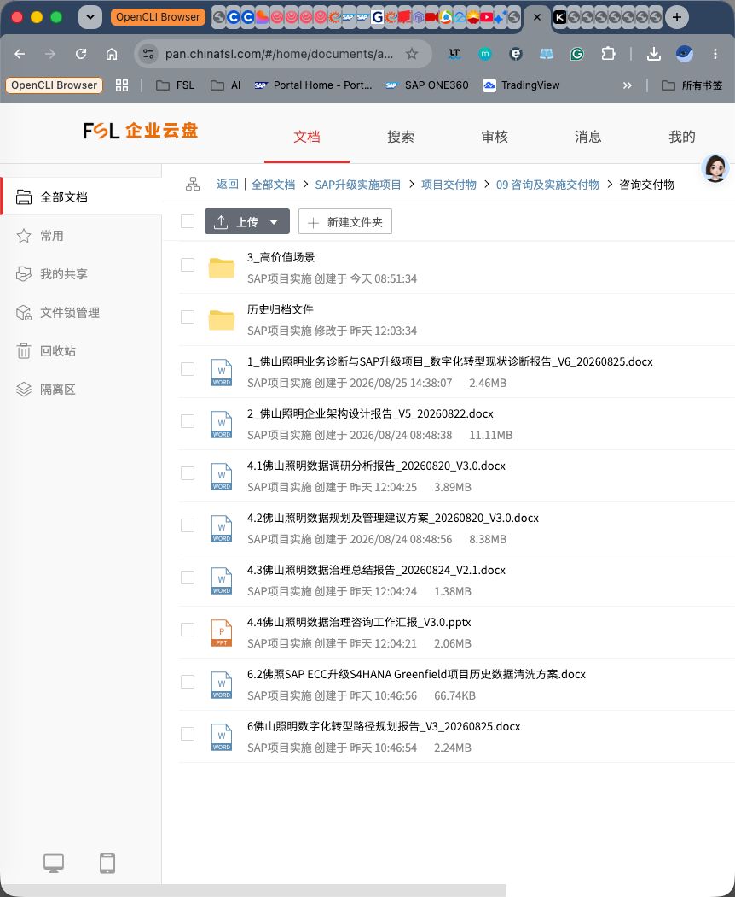

![FSL 佛山照明]()
![Atos]()
AGENDA
PROJECT OVERVIEW
佛照从"照明产品制造商"向"智能健康光环境服务商"转型，数字化是核心路径。
国资委1号文要求2026年底核心财务系统互联互通，SAP升级是硬约束。
公牛、欧普、Signify等标杆企业数字化领先，佛照需加速追赶。
701条业务需求暴露出管理、流程、系统、数据四个层面的深层问题。
RESEARCH OVERVIEW
调研方法：深度访谈 + 问卷调研 + 系统扫描 + 文档分析。两轮调研覆盖前中后台全部核心业务部门，包括家用/商用/车灯/电商/国际五大事业部及高明公司、研究院、供应链中心等中台支撑部门。
DELIVERABLES
回答："我们在哪？"
AS-IS现状 · 701条需求 · 成熟度评估 · 行业对标
回答："要去哪？"
TO-BE蓝图 · TOGAF 4A · 23个高价值场景
回答："怎么去？"
三年路线图 · 24项目卡片 · 资源与风险
逻辑链条：现状诊断 → 架构设计 → 路径规划 → 实施落地

📎 点击图片跳转至
佛照企业云盘 · 咨询交付物
KEY FINDINGS
PART 01
我们在哪？
DIAGNOSIS METHODOLOGY
从业务架构、数据架构、应用架构、技术架构四个维度，系统评估数字化能力现状。
参照国家标准，从组织、技术、数据、资源、数字化运营、数字化生产6大能力域评估成熟度等级。
ORGANIZATION COVERAGE
家用事业部、商用事业部、车灯事业部、电商事业部、国际事业部、新业务拓展中心
高明公司、研究院、产品及方案中心、供应链中心、招投标中心
数智化部、财务部、人力资源、法务、审计等职能支撑部门
REQUIREMENT TRACEABILITY
图：佛山照明 701 条原始需求 → TOGAF 4A 架构 → 23 个高价值场景流向图
颜色区分销售、采购、制造、仓储、财务等业务域，连线宽度代表需求条数流量。
BA 业务架构 / DA 数据架构 / AA 应用架构 / TA 技术架构，反映需求主要落在业务与数据层。
跨域痛点汇聚为可交付场景，是后续 24 个项目卡片与三年路线图的基础。
BUSINESS MODEL
研发成本
光源技术、智能控制、车灯前装等长期研发投入
制造成本
高明/新乡/南宁多基地原材料、人工、能源及设备折旧
营销成本
品牌建设、渠道推广、电商平台运营及海外市场拓展
管理成本
多基地运营管理、供应链协调、数字化系统运维
产品销售
光源、灯具、车灯等照明产品批发与零售收入
工程服务
商业照明、道路照明、体育场馆等工程项目设计+供货+安装
智能解决方案
智慧照明系统、IoT控制平台、场景化光环境方案
品牌授权
品牌使用权授权、技术输出、海外合资/合作分成
SURVEY OVERVIEW
本项目调研分两轮开展：第一轮（2025年10月27日—11月29日）历时约5周，完成18场业务访谈、2场管理层沟通，收集175条结构化需求；第二轮扩展至29个部门，合并整理后2026年全量需求编号A0001–A0701，共701条。
DIGITAL ORGANIZATION
数智化部下设应用开发、系统运维、数据管理三个团队，现有人员17人。负责SAP、OA、BI等核心系统的日常运维和需求开发。
1. 人员编制不足，难以支撑29个部门的业务需求
2. 以"被动响应"为主，缺乏主动规划能力
3. 与业务部门协作机制不清晰，需求优先级难以统一
改进方向：成立实体化PMO，引入数字化BP机制，从"IT支持"转向"数字化赋能"。
PROCESS MANAGEMENT
企管部牵头开展了多轮流程梳理，形成了L1-L2级流程文档。但L3级操作层流程覆盖不足，跨部门流程Owner机制未建立。
流程文档以Word/PPT形式分散存储，缺乏统一流程库。流程变更缺乏版本控制，新老流程并行现象存在。
1. 部门墙导致流程在边界处断裂
2. 流程线上化率不足，大量环节仍依赖线下
3. 流程绩效缺乏量化监控
SYSTEM LANDSCAPE DETAIL
| 系统 | 建设部门 | 运维部门 |
|---|---|---|
| SAP ECC | 数智化部（技术支持） | 外部顾问、数智化部 |
| 用友财务共享平台 | 财务管理部（主导）、数智化部 | 用友实施团队、财务管理部 |
| 聚水潭电商ERP | 电商事业部、数智化部 | 聚水潭厂商、电商事业部 |
| 顺丰WMS | 电商事业部、数智化部 | 顺丰厂商 |
| MES（生产执行系统） | 车灯事业部、研究院、数智化部 | 车灯事业部、MES厂商 |
| PLM（产品生命周期管理） | 研究院、产品及方案中心、数智化部 | 研究院、PLM厂商 |
| OA系统（泛微） | 企业管理部、数智化部 | 数智化部、泛微厂商 |
| SRM（供应商关系管理系统） | 招投标中心、供应链中心、数智化部 | 招投标中心、SRM厂商 |
| 佛照商城（B2B订货平台） | 家用事业部、电商事业部、数智化部 | 电商事业部、商城厂商 |
| AI平台/知识库 | 数智化部（自研） | 数智化部 |
| Finereport | 数智化部 | 数智化部 |
| 防伪防窜系统 | 高明仓库、数智化部 | 数智化部 |
| 加密系统 | 研究院、数智化部 | 数智化部 |
| 官网 | 企业管理部、数智化部 | / |
| 企业云盘 | 数智化部 | 数智化部 |
| 人力资源系统 | 人力资源部、数智化部 | / |
| 档案管理系统 | 办公室（党委办、维稳办）、数智化部 | 数智化部 |
| 电子签章系统 | 法律与风控事务部、数智化部 | 数智化部、契约锁厂商 |
| 司库系统 | 财务管理部、数智化部 | 浪潮厂商、财务管理部 |
| CRM（客户关系管理系统） | 商用事业部、家用事业部、数智化部 | 纷扬科技厂商、数智化部 |
| 企业微信/邮箱 | 数智化部 | 腾讯厂商、数智化部 |
INTEGRATION DETAIL
SAP与外围系统之间大量点对点接口，无统一中间件。接口开发标准不统一，文档缺失，故障排查困难。
1. PLM→SAP：BOM变更不同步
2. OA→SAP：订单需手工二次录入
3. SRM→SAP：送货单同步滞后
4. 电商→SAP：大订单超时
核心结论：集成问题不是技术问题，是架构问题。必须引入统一集成平台（CPI），从"蜘蛛网"变"星型"。
DIAGNOSIS CHECKPOINT
22个系统形成烟囱，SAP与外围存在大量断点。集成架构必须从"蜘蛛网"升级为"星型"。
主数据标准不统一，"一物多码"严重。数据治理是数字化转型的前提，不是可选项。
关键结论：没有主数据治理，S/4HANA上线后数据依然混乱；没有集成平台，系统之间依然不通。这两项必须在2026年Phase 1完成。
DIGITAL HISTORY
SAP ECC上线，建立核心财务/物流基础。各业务部门陆续引入PLM、OA、SRM等单点系统。
WMS、MES、CRM等系统上线，但集成以点对点为主，形成"接口蜘蛛网"。
电商系统、BI报表、数据仓库陆续建设，但主数据混乱、跨系统协同仍存瓶颈。
S/4HANA Greenfield实施，以SAP为核心重建数字化底座，实现架构级跃迁。
AS-IS SYSTEM LANDSCAPE
DATA GOVERNANCE
历史物料格式混乱，"一码多物"现象严重，库存准确性受影响。各部门维护标准不一致。
研发BOM与生产BOM不统一，变更无法实时同步，设计与制造"两张皮"。
客户、供应商信息在SAP、SRM、CRM中分别维护，同一客商多系统编码不同。
成本无法穿透查询，库存状态不可视，报表分析滞后，管理层难以实时洞察经营全貌。
PAIN POINTS · MANAGEMENT
仅在出库环节拦截信用，下单环节不校验，导致虚开订单锁定库存和额度。
法务端无法实时获取付款进度，难以识别超付风险，缺乏全生命周期闭环管控。
同一物料不同部门维护价格，缺乏对长期无效价格的自动冻结机制。
研发产出、供应商交付、质量损失等KPI难以自动量化，依赖人工统计。
PAIN POINTS · PROCESS
SRM存储发票，但SAP应付校验无附件查看功能，财务需线下翻阅纸质资料。
OA订单与SAP不关联，成品车间收到订单不能直接分解BOM，计划物料分解耗时长。
资源回收废品管理依赖人工线下登记，未在SAP实现全流程闭环，存在资产流失风险。
财务申请、预付款、报销三个流程需领导依次审批，建议合并或形成闭环。
PAIN POINTS · SYSTEM
研发BOM变更无法实时同步至生产端，导致设计与制造"两张皮"。
OA审批后的订单无法自动触发SAP生产计划分解，需人工二次录入。
采购订单、送货单在SRM与SAP间同步不及时，影响供应商送货准确性。
自营订单自动交货程序在处理大订单时频繁超时，无法满足电商业务需求。
PAIN POINTS · DATA
各部门认定标准不一致（高新项目时间、首次下单时间），销售统计需人工甄别。
历史物料格式混乱，"一码多物"现象严重，影响库存准确性。
无法实现成本穿透式查询，难以逐层追溯材料成本及对应供应商最新采购价。
电商业务无法在一个界面清晰看到产品在聚水潭、调货中、质检中等全链路状态。
PAIN MATRIX
| 痛点层面 | 核心问题 | 影响范围 | 紧急程度 |
|---|---|---|---|
| 管理 | 事后补救多于事前预防 | 信用、合同、价格、绩效 | 高 |
| 流程 | 端到端断裂，线下作业冗余 | P2P、O2C、废品、审批 | 极高 |
| 系统 | 集成断点，性能瓶颈 | PLM、OA、SRM、SAP | 极高 |
| 数据 | 主数据混乱，价值挖掘缺失 | 物料、BOM、客商、报表 | 极高 |
结论：流程、系统、数据三个层面的痛点紧急程度最高，且相互关联——系统不通导致流程断点，流程断点导致数据缺失，数据缺失导致管理盲区。
MATURITY ASSESSMENT
评估依据：参照GB/T 43439-2023国家标准，从组织、技术、数据、资源、数字化运营、数字化生产六大能力域评估。佛照当前处于L1.9，目标三年内达到L3.5+（集成级）。
DCMM ASSESSMENT · 实时评估
查看完整评估报告 → 数据来源：佛山照明DCMM线上评估系统
MATURITY ASSESSMENT
评估依据：参照GB/T 43439-2023国家标准，从组织、技术、数据、资源、数字化运营、数字化生产6大能力域评估。佛照当前处于L1.9，目标三年内达到L3.5+（集成级）。
SOURCE CHART · 诊断报告
查看完整评估报告 → 数据来源：《数字化转型现状诊断报告 V6》
6-DIMENSION RADAR
| 能力域 | 当前得分 | 目标得分 | 差距 |
|---|---|---|---|
| 组织 | 2.1 | 3.5 | 1.4 |
| 技术 | 2.3 | 3.8 | 1.5 |
| 数据 | 1.2 | 3.8 | 2.6 |
| 资源 | 2.0 | 3.5 | 1.5 |
| 数字化运营 | 1.8 | 3.5 | 1.7 |
| 数字化生产 | 2.0 | 3.5 | 1.5 |
CAPABILITY · ORGANIZATION
1. 高层对数字化转型有清晰认知和战略决心
2. 数智化部组织架构基本完整
3. 业务部门对数字化需求明确
1. 缺乏CIO/CDO级别的专职领导
2. PMO未实体化，项目协调力度不足
3. 数字化BP机制缺失，业务与IT衔接不畅
SOURCE CHART · 诊断报告
数据来源：《数字化转型现状诊断报告 V6》
CAPABILITY · TECHNOLOGY
1. SAP ECC运行稳定，核心业务有系统支撑
2. 网络基础设施基本满足需求
3. 云资源使用经验已有积累
1. SAP ECC技术架构老旧，高并发支撑不足
2. 缺乏统一集成平台，接口管理混乱
3. 用户体验差，Fiori等现代化前端未引入
STATE-OWNED REGULATION
| 文件 | 核心要求 | 时间节点 | 对佛照影响 |
|---|---|---|---|
| 1号文（财务数智化） | 建设DRP系统，业财数据统一 | 2026年底互联互通 | SAP升级是核心举措 |
| 2号文（穿透式监管） | 从集团报表穿透到明细账 | 十五五期间全面建成 | 数据治理必须到位 |
| 15号文（内控体系） | 全级次覆盖、全业务在线 | 2年完成穿透测试 | 流程线上化是刚需 |
STRATEGY ALIGNMENT
1. 市场驱动与增长：深化渠道、强化研产销协同
2. 运营卓越与降本：精益供应链、合规风控
3. 创新驱动与升级：产品智能化、绿色化
1. 销售全链路可视 → 渠道深化
2. 供应链协同 → 研产销协同
3. 质量追溯+成本穿透 → 精益管理
4. PLM深化+IoT → 产品智能化
DIAGNOSIS SUMMARY · 诊断报告
查看完整诊断报告 → 数据来源：《数字化转型现状诊断报告 V6》
PART 02
我们要去哪？
TOGAF 9.2 ADM
The Open Group Architecture Framework，全球数千个企业架构实践验证的迭代式架构开发方法，由8个相位 + 持续需求管理构成。
转型蓝图、驱动因素、架构原则、利益相关方分析
业务能力地图（L1-L3）、端到端流程（OTC/PTP/MTC）
数据架构（MDG主数据）+ 应用架构（系统全景/集成）
SAP PCE基础设施、三套环境、BTP/CPI技术组件
过渡路线图、迁移策略（Greenfield数据迁移）
架构治理机构（ARB）、变更控制流程
为什么选择TOGAF？ 国资委推荐、国际通用、与SAP实施方法论天然对齐。确保架构设计有方法论支撑，不是拍脑袋。
ARCHITECTURE DRIVERS & PRINCIPLES
从制造商到服务商的业务模式转变
1号文/2号文/15号文的合规硬约束
SAP ECC技术架构无法满足业务增长
主数据混乱制约数字化价值释放
泰国工厂上线需要本地化合规支撑
标杆企业数字化领先，佛照需追赶
架构设计以业务价值为导向，技术服务于业务。
主数据、接口、流程标准化，杜绝一事一议。
新建系统通过统一集成平台连接，严禁点对点。
分Phase实施，每Phase有明确交付物和验收标准。
满足等保2.0和国资监管要求，数据安全贯穿全周期。
推广Fiori等现代化前端，提升用户效率和满意度。
5-LAYER TRACEABILITY
五层追溯的价值：每一条需求都可以从原始业务域出发，经过痛点抽象、架构映射、场景归类，最终定位到具体的项目卡片。实现全链路可审计。
SANKEY DIAGRAM
数据来源：《企业架构设计报告 V6》
BUSINESS ARCHITECTURE
PLM深化 · 项目管控 · 技术标准化
计划协同 · 采购优化 · 库存可视化
MES集成 · 质量追溯 · 成本精细化
订单全链路 · 信用管控 · 价格统一
集团合并 · 司库管理 · 业财一体化
批次追溯 · 质检自动化 · 不良分析
MDG治理 · 标准统一 · 唯一数据源
CPI集成 · 接口管理 · 监控运维
SOURCE CHART · 企业架构设计报告
数据来源：《企业架构设计报告 V6》
CAPABILITY · R&D
PLM系统运行中，但BOM变更无法实时同步至SAP。研发费用归集靠人工，投入产出比无法量化。
PLM与SAP深度集成，BOM变更实时同步。研发项目全生命周期管控，费用自动归集，ROI可量化。
关键改进：引入PS项目管理模块，实现研发项目从立项到结项的全流程管控。BOM变更通过CPI实时同步至SAP生产端。
CAPABILITY · SUPPLY CHAIN
MRP运行周期长，计划与执行脱节。库存数据分散在SAP、WMS、MES中，无法统一视图。
MRP Live实时运算，计划-采购-生产-仓储全链路协同。库存全链路可视化，安全库存智能预警。
关键改进：升级MRP至MRP Live，引入EWM与SAP深度集成，实现从需求到交付的全链路可视。
CAPABILITY · FINANCE
合并报表手工编制，月结需7-8天。业财数据分离，财务难以追溯业务明细。
Group Reporting自动合并，月结≤2天。业财一体化，财务可直接穿透查询业务数据。
关键改进：部署Group Reporting替代手工合并，统一科目表和合并抵消规则。司库管理实现资金集中监控。
SOURCE CHART · 企业架构设计报告
数据来源：《企业架构设计报告 V6》
DATA ARCHITECTURE
以SAP MDG为核心，建立物料、客商、BOM、科目四大主数据域的统一治理体系。明确Data Owner、数据标准、质量规则。
每个数据域只有一个权威来源，杜绝"一物多码""数出多源"。物料→SAP MDG，客户→SAP BP，供应商→SAP BP。
Greenfield实施采用"清洗后迁移"策略。6.2万物料全面清洗去重，历史数据按保留期策略选择性迁移。
规划建设统一数据平台，将分散数据汇聚建模，形成面向供应链、财务、营销的主题数据资产。
DATA GOVERNANCE FRAMEWORK
数据治理委员会（决策层）→ 数据管理办公室（管理层）→ 数据Owner（执行层）
物料编码规则、客商主数据标准、BOM规范、会计科目表统一
主数据申请→审批→发布→变更→退役的全生命周期流程
SAP MDG为主数据治理平台，CPI为数据同步通道，数据质量监控工具实时告警
SOURCE CHART · 企业架构设计报告
数据来源：《企业架构设计报告 V6》
APPLICATION ARCHITECTURE
SAP ECC → S/4HANA PCE（核心升级）
PLM、MES、WMS等（接口优化）
财务合并 → Group Reporting
报表平台 → 新BI平台
老旧报表工具、重复功能系统
逐步退役，数据归档
SAP MDG（主数据治理）
SAP CPI（集成平台）
Fiori（现代化前端）
APPLICATION DOMAIN STRATEGY
| 应用域 | 策略 | 关键系统 | 行动 |
|---|---|---|---|
| ERP核心 | 升级 | SAP ECC→S/4 PCE | Greenfield实施 |
| 财务管理 | 深化 | Group Reporting + 司库 | 新模块部署 |
| 供应链管理 | 集成 | SRM + WMS + EWM | CPI标准化接口 |
| 生产制造 | 集成 | MES + QM | 深度集成+追溯 |
| 研发管理 | 优化 | PLM | BOM实时同步 |
| 销售与渠道 | 深化 | CRM + 电商 | 订单全链路 |
| 主数据 | 新建 | MDG | 全新部署 |
| 数据分析 | 新建 | 数据中台 + BI | 全新建设 |
SOURCE CHART · 企业架构设计报告
数据来源：《企业架构设计报告 V6》
INTEGRATION ARCHITECTURE
22个系统之间大量点对点接口，维护成本高、稳定性差、故障排查困难。每次系统变更都可能影响多个接口。
以SAP CPI为统一集成平台，所有外围系统通过标准API与SAP连接。16个L3集成流程、210个L4接口场景全部标准化。
关键成果：梳理完成IF-93至IF-101共16个L3集成流程、210个L4接口场景的全量接口台账。这是后续开发和测试的基线文档。
TECHNOLOGY ARCHITECTURE
Private Cloud Edition私有云部署，兼顾数据安全与云弹性。支持泰国工厂本地化合规（泰铢记账、增值税申报）。
开发（DEV）→ 测试（QAS）→ 生产（PRD），标准的SAP实施环境配置，支持灰度发布和回滚。
Business Technology Platform提供扩展开发能力，CPI作为统一集成中枢，Fiori提供现代化用户体验。
满足等保2.0三级要求，支持国资监管穿透式审计，数据加密传输与存储，细粒度权限控制。
USER EXPERIENCE
1. SAP GUI界面复杂，学习成本高
2. 缺乏单点登录，多系统反复切换
3. 移动端支持不足，审批效率低
4. 报表查询缺乏引导，新人难上手
1. 基于角色的个性化首页，千人千面
2. 单点登录，一键跳转
3. 移动端APP，随时随地审批
4. 智能搜索，快速定位功能
ARCHITECTURE CHECKPOINT
以SAP S/4HANA PCE为核心交易底座，以SAP CPI为统一集成枢纽，以MDG为主数据治理平台，以Fiori为统一用户体验。
1. 业务优先，技术服务于业务
2. 标准统一，杜绝定制化
3. 集成优先，严禁点对点
4. 渐进演进，分Phase实施
ARCHITECTURE GAP
| 架构域 | AS-IS | TO-BE | 差距 | 风险等级 |
|---|---|---|---|---|
| 主数据治理 | 1.2 | 3.8 | 2.6 | 高 |
| 供应链计划 | 1.5 | 3.5 | 2.0 | 高 |
| 销售与渠道 | 1.7 | 3.5 | 1.8 | 中 |
| 集团财务 | 2.3 | 4.0 | 1.7 | 中 |
| 制造运营 | 1.8 | 3.5 | 1.7 | 中 |
| 质量管理 | 2.0 | 3.5 | 1.5 | 中 |
3-YEAR MATURITY PATH
建立治理体系
完成主数据标准化
搭建云平台底座
核心业务模块上线
打通OTC/PTP/MTC
泰国工厂合规
数据智能平台
预测性维护/智能排产
生态协同
TRANSITION ROADMAP
而非Brownfield（升级）或Hybrid（混合）。Greenfield允许一次性重建数据标准、流程模型和系统架构，避免历史包袱。
2026 Q4：环境搭建完成
2027 Q1：S/4HANA正式上线（Go-Live）
2027 Q2：核心业务模块切换
2027 Q4：泰国工厂上线
ARB架构治理：成立架构评审委员会（Architecture Review Board），所有架构决策须经ARB评审，作为后续配置和开发的不可更改基线。
SOURCE CHART · 路径规划报告
数据来源：《数字化转型路径规划报告 V3》
23 HIGH-VALUE SCENARIOS
排序依据：业务价值（BV 1-5）× 技术难度（TD 1-5）综合评分。P0以高价值+可快速落地为主；P1以高价值但实施周期长或依赖P0前置条件为主；P2以报表可视化类为主，技术难度低但业务价值相对有限。
SCENARIO DETAILS
| 编号 | 场景名称 | BV/TD | 业务域 | 关联架构 |
|---|---|---|---|---|
| S01 | 物料主数据治理 统一物料编码、分类和属性标准，建立主数据管理平台，实现'一码一物' | 5/4.5 | 主数据域 | DA |
| S02 | 客户信用管理 基于SAP标准信用管理，结合佛照特殊业务需求进行定制开发，降低坏账风险 | 4.5/4.5 | 销售域 | BA |
| S06 | 海外财务合规 实现多语言/多货币的海外系统支持 | 3/3.2 | 财务域 | AA |
| S07 | 制造成本还原 一期核算，二期报表。基础核算，法人和集团成本视图一期实施 | 4.8/4.5 | 财务域 | BA |
| S08 | 财务组织+科目主数据 会计科目从1800+变更为600个 | 2.2/2.1 | 财务域 | DA |
| S09 | 应收清账+BIP接口 自动化应收清账流程，打通财务共享BIP接口 | 2.8/2.3 | 财务域 | AA |
| S11 | 按客户销售项目核算和分析方案 基于SAP项目核算功能，实现按客户/项目的收入、成本、利润精细化分析 | 4.3/3.3 | 财务域 | BA |
| S12 | 研发投入产出分析体系建设 建立研发项目成本归集和产出效益分析体系，支撑研发决策 | 4.5/3.5 | 研发BOM域 | AA |
| S15 | 采购配额管理与订单分配智能化 基于SAP标准功能，实现采购配额自动分配和订单智能分单 | 4.5/3.5 | 采购域 | BA |
| S16 | 产前齐套性预警与跟踪 基于MRP结果，实现生产前物料齐套性检查和缺料预警 | 4.3/3.6 | 计划制造域 | BA |
| 编号 | 场景名称 | BV/TD | 业务域 | 关联架构 |
|---|---|---|---|---|
| S03 | 跨公司转卖模式优化 优化跨公司交易流程，实现内部结算自动化和利润中心核算 | 3.8/3.6 | 销售域 | BA |
| S04 | 销售价格与折扣管理体系优化 建立统一的价格策略和折扣审批体系，实现价格全生命周期管控 | 3.2/4.2 | 销售域 | BA |
| S05 | 销售订单全链路追踪 打通销售、生产、物流全链路，实现订单状态实时可视和交期智能预警 | 3.4/4.2 | 销售域 | BA |
| S10 | 集团合并报表建设 一期完成合并抵消底稿；二期系统自动出具3大合并报表及部分附注 | 3.2/4.5 | 财务域 | BA |
| S13 | 供应商交期与供应商绩效管理方案 优化SRM与SAP交期信息同步，做好交期管理的制度 | 4.2/3.8 | 采购域 | BA |
| S14 | 采购价格透明化与比价分析体系 建立采购价格数据库，实现历史价格追踪、比价分析和采购决策支持 | 4.1/3.8 | 采购域 | BA |
| S18 | 主生产计划MPS建设 MTS+MTO场景结合的主生产计划 | 4.2/2.8 | 计划制造域 | BA |
| S19 | MRP物料需求计划 MRP需要BOM建立完善是前提条件 | 4.6/3.2 | 计划制造域 | BA |
| S23 | BOM全生命周期建设 MBOM在PLM系统搭建；ECN管理SAP标准功能启用 | 3.3/3.8 | 研发BOM域 | AA |
| 编号 | 场景名称 | BV/TD | 业务域 | 关联架构 |
|---|---|---|---|---|
| S17 | 库存可视化与多维度查询体系 开发库存多维查询报表，支持按物料、仓库、批次等维度实时查询 | 3.6/4.5 | 采购域 | BA |
| S20 | 生产进度看板 开发报表（计划与生产订单完工实际产出对比） | 3.9/3.6 | 计划制造域 | AA |
| S21 | 质量追溯建设 开发质量追溯报表 | 3/2.6 | 计划制造域 | AA |
| S22 | 质量合格率统计分析 开发质量合格率统计分析报表 | 3/2.3 | 计划制造域 | AA |
GOVERNANCE · ARB
Architecture Review Board（架构评审委员会）是 TOGAF 治理框架中定义的跨领域架构决策机构。在佛照项目中，ARB 承担以下核心角色：
① 架构守门人 — 所有涉及系统边界、数据流向、接口定义、技术选型的变更，必须经 ARB 评审通过后方可进入实施阶段。
② 冲突仲裁者 — 当不同专题（如财务域 vs 制造域）的架构需求发生冲突时，ARB 基于业务优先级和技术可行性做出最终裁决。
③ 基线守护者 — 已评审通过的架构决策形成「不可更改基线」，后续所有配置开发和接口开发必须严格遵循，任何偏离需走变更审批流程。
成员构成：
企业架构师（主席/召集人）+ 业务架构师 + 数据架构师 + 应用架构师 + 技术架构师 + PMO 代表
评审范围：
· 四层架构蓝图变更（业务/数据/应用/技术）
· 22 系统四象限定位调整
· 新增接口或集成方案选型
· 主数据标准与数据治理规则变更
· 非标开发需求的技术可行性评估
运作机制：双周例会 + 临时紧急评审；决议以会议纪要形式归档，纳入项目台账可追溯。
关键原则：所有架构决策一经 ARB 评审通过，即为不可更改基线。后续配置开发和接口开发必须严格遵循。未获 ARB 审批的架构变更为违规操作，PMO 有权叫停相关实施任务。
ARCHITECTURE SUMMARY
业务架构（8大能力域+3大端到端流程）+ 数据架构（MDG+SSOT）+ 应用架构（22系统四象限）+ 技术架构（S/4 PCE+CPI+Fiori）。
701条需求 → 23个痛点 → 4A架构 → 23个高价值场景 → 24个项目卡片。全链路可审计、可追溯。
从L1.9到L3.5+的明确路线图，每个阶段有量化目标、验收标准和KPI。
PART 03
我们怎么去？
VISION
VISION 2028
实时洞察 · 穿透查询 · 智能分析
端到端闭环 · 跨部门协同 · 自动触发
预测预警 · 算法优化 · 生态协同
CONSTRAINTS
2027 Q1 S/4HANA必须上线（国资监管1号文要求）
泰国工厂2027 Q3必须完成本地化合规
SAP实施预算950万（含税）已确定
外围系统预算需另行评估和审批
关键用户抽调不能影响日常业务
外部顾问依赖度需逐步降低
Greenfield实施，历史数据选择性迁移
现有22个系统需逐一制定处理策略
STRATEGIC OBJECTIVES
| 阶段 | 年份 | 核心目标 | 关键成果 | 项目卡片 |
|---|---|---|---|---|
| Phase 1 | 2026 | 夯实底座 | 云平台上线 · 主数据标准化 · 集成框架搭建 | PC01-PC03 + 外围8张 |
| Phase 2 | 2027 | 贯通协同 | 核心业务上线 · OTC/PTP/MTC打通 · 泰国合规 | PC04-PC08 + 外围9张 |
| Phase 3 | 2028 | 智慧跃升 | 智能分析平台 · AI应用 · 生态协同 | PC09-PC11 + 外围7张 |
SOURCE CHART · 路径规划报告
数据来源：《数字化转型路径规划报告 V3》
VALUE QUANTIFICATION
| 价值领域 | 当前状态 | 目标状态 | 量化收益 |
|---|---|---|---|
| 财务月结 | 7-8天 | ≤2天 | 节省人力成本约XX万/年 |
| 库存周转 | XX天 | 优化15% | 释放流动资金约XX万 |
| 采购周期 | XX天 | 缩短20% | 供应链效率提升 |
| 订单处理 | 人工为主 | 自动化+60% | 销售运营效率提升 |
| 质量追溯 | 批次级 | 单品级 | 质量损失降低约XX% |
| 数据准确率 | ~70% | ≥95% | 决策质量显著提升 |
24 PROJECT CARDS
PC01 数字底座 · PC02 主数据治理 · PC03 集成架构
PC04 流程蓝图 · PC05 财务核心 · PC06 销售全链路
PC07 供应链协同 · PC08 质量追溯 · PC09 海外深化
PC10 数据智能 · PC11 生态协同
AI平台 · 数据中台 · APS高级排产 · MES升级
CRM升级 · 预算管理 · MRP优化 · 信息安全
电商中台 · 经销商门户 · 供应商协同 · 智慧能源
设备管理
项目识别方法：基于五层追溯收敛，每个项目卡片都有明确的scope、目标、验收标准、依赖关系和资源需求。SAP 11个项目由Eviden实施，外围13个项目由佛照IT团队或第三方实施。
SOURCE CHART · 路径规划报告
数据来源：《数字化转型路径规划报告 V3》
PHASE 1 · 2026 夯实底座
搭建DEV/QAS/PRD三套环境，完成基础配置
MDG部署，6.2万物料清洗，四大主数据标准化
CPI平台部署，核心接口框架搭建
AI算力环境准备，数据接入，模型训练框架
数据湖/仓建设，ETL流程，主题建模
等保2.0三级，数据安全，权限治理
PHASE 2 · 2027 贯通协同
L1-L3流程梳理，变革管理，培训赋能
FI/CO/Group Reporting，合并报表自动化
SD模块，信用管控，价格管理，订单可视化
MM/PP/MRP Live，EWM集成，计划协同
QM深化，PLM集成，批次追溯
MES与SAP深度集成，生产数据实时回传
PROJECT CARD · PC05
FI财务会计 · CO管理会计 · Group Reporting集团合并 · 司库管理
统一科目表 · 合并抵消自动化 · 资金集中监控 · 月结≤2天
合并报表月结从7-8天缩短至≤2天，财务凭证自动化率提升60%
强依赖PC01云平台、PC02主数据。与PC09海外深化有交叉。
PROJECT CARD · PC06
SD销售与分销 · 信用管理 · 价格条件 · 订单全链路可视化
信用管控前置 · 价格体系统一 · 订单状态实时查询 · 客户需求预测
订单处理时效提升40%，信用风险实时预警，价格管理零差错
强依赖PC01云平台、PC02主数据（客商主数据）。
PROJECT CARD · PC07
MM物料管理 · PP生产计划 · MRP Live · EWM扩展仓储管理
MRP实时运算 · 计划-采购-生产协同 · 库存全链路可视 · 安全库存预警
库存周转率提升15%，采购周期缩短20%，缺货率降低30%
强依赖PC01云平台、PC02主数据（物料主数据）、PC03集成架构（MES/WMS接口）。
PHASE 3 · 2028 智慧跃升
德国FZ33合规，潜在新增海外工厂支持
预测性维护、智能排产、需求预测等AI应用
供应商协同平台、经销商门户、产业链数据协同
客户360视图，精准营销，会员运营
PROJECT DEPENDENCIES
关键路径：PC01（云平台）→ PC02（主数据）→ PC04（流程蓝图）→ PC05-08（核心业务模块）→ Go-Live
1. 所有业务模块依赖PC01云平台
2. 所有模块依赖PC02主数据治理
3. 财务模块依赖PC05
4. 泰国工厂依赖PC09海外深化
1. 外围系统项目可与SAP项目并行
2. Quick Wins不依赖SAP实施
3. AI平台可在数据中台完成后启动
AI REQUIREMENTS
1. 客户需求预测（基于历史销售数据）
2. 智能排产（基于订单+产能+物料）
3. 预测性维护（基于设备传感器数据）
4. 信用风险预警（基于客户行为数据）
2026年：AI平台基础建设，数据接入
2027年：试点场景模型训练与验证
2028年：规模化部署，持续优化
INFOSECURITY
1. 等保2.0三级认证
2. 数据分类分级管理
3. 访问控制与权限审计
4. 数据加密传输与存储
1. S/4HANA安全加固
2. 统一身份认证（IAM）
3. 敏感数据脱敏
4. 安全运维监控（SOC）
ROADMAP CHECKPOINT
云平台 · 主数据 · 集成框架 · 数据中台 · 安全
财务 · 销售 · 供应链 · 质量 · MES · 泰国
AI平台 · 智能分析 · 生态协同 · 海外深化
投资节奏：2026年35% · 2027年45% · 2028年20%。2027年是投入最大的一年，也是见效最明显的一年。
PRIORITY MATRIX
主数据治理 · S/4HANA PCE底座 · 财务核心 · 销售全链路 · 集成架构
供应链协同 · 质量追溯 · 数据中台 · MES升级 · 信息安全
报表优化 · 接口监控 · 用户培训 · 流程标准化
CRM深化 · 电商中台 · 智慧能源 · 设备管理
SOURCE CHART · 路径规划报告
数据来源：《数字化转型路径规划报告 V3》
3-YEAR ROADMAP
| 年份 | 主题 | 核心项目 | 成熟度 | 预算占比 |
|---|---|---|---|---|
| 2026 | 夯实底座 | 云平台 · 主数据 · 集成 · 数据中台 · 安全 | L1→L3 | ~35% |
| 2027 | 贯通协同 | 财务 · 销售 · 供应链 · 质量 · MES · 泰国 | L3→L4 | ~45% |
| 2028 | 智慧跃升 | AI平台 · 智能分析 · 生态协同 · 海外深化 | L4深化 | ~20% |
投资节奏：2027年投入最大（45%），因为核心业务模块集中上线。2026年聚焦基础（35%），2028年聚焦智能化（20%）。总投资约950万（含税）SAP实施费 + 外围系统预算另行评估。
PROJECT PANORAMA
2026 PLAN
S/4HANA PCE环境搭建 · MDG部署启动 · 主数据标准制定
6.2万物料清洗 · CPI平台部署 · 核心接口框架搭建 · 数据中台启动
2027 PLAN
系统正式上线！财务/销售/采购/生产核心模块切换。
OTC/PTP/MTC端到端流程贯通 · MES/WMS深度集成
泰国工厂本地化上线 · Group Reporting合并报表自动化
系统稳定运行 · 用户培训全覆盖 · 运维体系建立
2028 PLAN
基于积累的数据资产，部署预测性维护、智能排产、客户需求预测等AI应用。
德国FZ33合规，支持潜在新增海外工厂的本地化需求。
供应商协同平台、经销商门户，探索产业链上下游数据协同。
建立持续迭代优化机制，基于数据反馈不断优化业务流程。
HR PLAN
1. 成立实体化PMO，赋予项目优先级和资源调配裁决权
2. 从业务部门选拔骨干进行数字化赋能，成为业务与IT的"翻译官"
3. 建立ITSM体系，将运维从"被动救火"转为"主动运营"
SOURCE CHART · 路径规划报告
数据来源：《数字化转型路径规划报告 V3》
RISK MATRIX
| 风险 | 可能性 | 影响 | 等级 | 应对策略 |
|---|---|---|---|---|
| 主数据清洗延期 | 高 | 高 | 极高 | 提前启动 · 分批清洗 · 外包支持 |
| 业务部门配合不足 | 中 | 高 | 高 | 高层背书 · 纳入KPI · 变革管理 |
| 多系统集成失败 | 中 | 高 | 高 | 分阶段集成 · 充分测试 · 回滚预案 |
| 泰国合规复杂度 | 中 | 中 | 中 | 提前调研 · 本地化顾问 · 监管沟通 |
| 预算超支 | 低 | 高 | 高 | 分期付款 · 变更控制 · 预留缓冲 |
RISK MITIGATION
成立项目指导委员会，总经理任主任，每月review项目进展。PMO实体化运作，拥有资源调配权。
分阶段上线，每阶段充分测试。建立灰度发布机制，出问题可快速回滚。核心接口双活备份。
主数据清洗提前6个月启动，采用"分批清洗+并行验证"策略。引入外部数据治理专家。
建立严格的变更控制流程，任何scope变更须经ARB评审。预留10%预算作为应急缓冲。
CHANGE MANAGEMENT
1. 项目启动大会：总经理亲自动员
2. 双周项目简报：发送给全体员工
3. 关键用户月度座谈会：收集反馈
4. 项目里程碑庆祝：增强参与感
1. 关键用户深度培训（40小时+）
2. 最终用户操作培训（8小时）
3. 管理层看板培训（2小时）
4. 持续在线学习资源库
1. 关键用户津贴和晋升优先
2. 部门配合度纳入KPI
3. 优秀案例评选和奖励
4. 项目成功后的全员分享
1. 识别变革阻力来源（部门/个人）
2. 一对一沟通和辅导
3. 设立"变革大使"机制
4. 必要时调整岗位或人员
PART 04
下一步做什么？
ORGANIZATION
总经理任主任，分管副总任副主任，各部门负责人为成员。每月召开一次项目Review会议，决策重大问题。
建议由企管部或数智化部牵头，配备2名专职项目经理。负责项目计划、资源协调、风险管理、进度汇报。
每个核心业务模块配备业务负责人+IT负责人的双轨制。业务负责人来自业务部门，IT负责人来自数智化部。
Eviden作为SAP实施主顾问，按需引入数据治理、变更管理、培训等专项顾问。
KEY MILESTONES
项目指导委员会成立 · PMO组建 · S/4环境搭建启动
主数据标准发布 · MDG部署 · 6.2万物料清洗完成
S/4HANA正式上线！核心业务模块切换
泰国工厂上线 · Group Reporting月结≤2天
数据智能平台上线 · 成熟度达到L3.5+
CRITICAL SUCCESS FACTORS
总经理亲自挂帅，各部门负责人纳入KPI考核。
不是IT做给业务用，而是业务牵头、IT支撑。
主数据治理不妥协，宁可延期也不带脏数据上线。
培训、沟通、激励三管齐下，降低用户抵触。
不贪大求全，按Phase 1/2/3稳步推进。
上线不是终点，建立持续优化和反馈机制。
APPENDIX · ABBREVIATIONS
| 缩略语 | 全称 | 中文 |
|---|---|---|
| TOGAF | The Open Group Architecture Framework | 开放群组架构框架 |
| ADM | Architecture Development Method | 架构开发方法 |
| MDG | Master Data Governance | 主数据治理 |
| CPI | Cloud Platform Integration | 云平台集成 |
| PCE | Private Cloud Edition | 私有云版本 |
| OTC | Order to Cash | 订单到收款 |
| PTP | Procure to Pay | 采购到付款 |
| MTC | Manufacture to Cost | 制造到成本 |
| ARB | Architecture Review Board | 架构评审委员会 |
| PMO | Project Management Office | 项目管理办公室 |
| DCMM | Data Management Maturity Model | 数据管理成熟度模型 |
| GB/T 43439 | — | 数字化转型成熟度国家标准 |
APPENDIX · REFERENCES
| # | 文档名称 | 版本 | 状态 |
|---|---|---|---|
| 1 | 佛山照明数字化转型现状诊断报告 | V6 | 已发布 |
| 2 | 佛山照明企业架构设计报告 | V6.0 | 已发布 |
| 3 | 佛山照明数字化转型路径规划报告 | V3.0 | 已发布 |
| 4 | GB/T 43439-2023 数字化转型成熟度模型 | — | 国家标准 |
| 5 | GB/T 36073-2025 DCMM 数据管理成熟度 | — | 国家标准 |
| 6 | 制造业企业数字化转型实施指南（工信部2024） | — | 政策文件 |
KPI FRAMEWORK
| KPI类别 | 指标 | 基线 | 目标 | 测量周期 |
|---|---|---|---|---|
| 财务效率 | 合并报表月结天数 | 7-8天 | ≤2天 | 月度 |
| 财务效率 | 凭证自动化率 | ~30% | ≥90% | 月度 |
| 运营效率 | 订单处理时效 | 基准 | +40% | 周度 |
| 运营效率 | 库存周转天数 | 基准 | -15% | 月度 |
| 数据质量 | 主数据准确率 | ~70% | ≥95% | 月度 |
| 系统稳定 | SAP系统可用性 | — | ≥99.5% | 实时 |
| 用户满意 | 关键用户满意度 | — | ≥4.0/5.0 | 季度 |
GOVERNANCE MECHANISM
总经理领衔
月度Review
重大决策
双周例会
进度跟踪
风险管理
每日站会
任务执行
问题升级
COMMUNICATION
1. 项目团队每日站会（15分钟）
2. 双周项目例会（2小时）
3. 月度指导委员会汇报（1小时）
4. 项目简报双周发送全员
L1：团队内部解决（1天内）
L2：PMO协调（3天内）
L3：ARB评审（1周内）
L4：指导委员会决策（2周内）
SUMMARY
佛照数字化成熟度1.9分，系统有但不通、数据有但不准。701条需求清晰指向23个高价值场景。
TOGAF四层架构蓝图已完成，五层追溯体系确保701条需求全链路可审计。三年从L1.9提升到L3.5+。
24个项目卡片覆盖2026-2028三年。立即启动指导委员会、PMO组建和主数据清洗。
佛照 SAP 升级及业务诊断咨询方案
Questions & Discussion